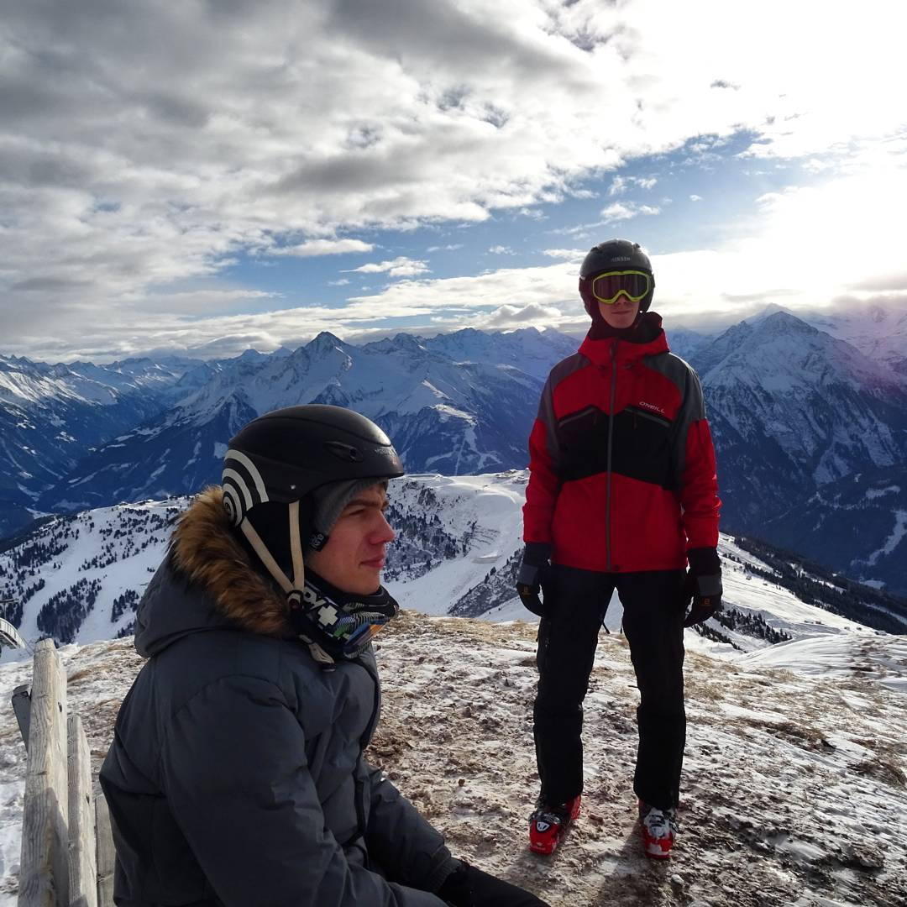
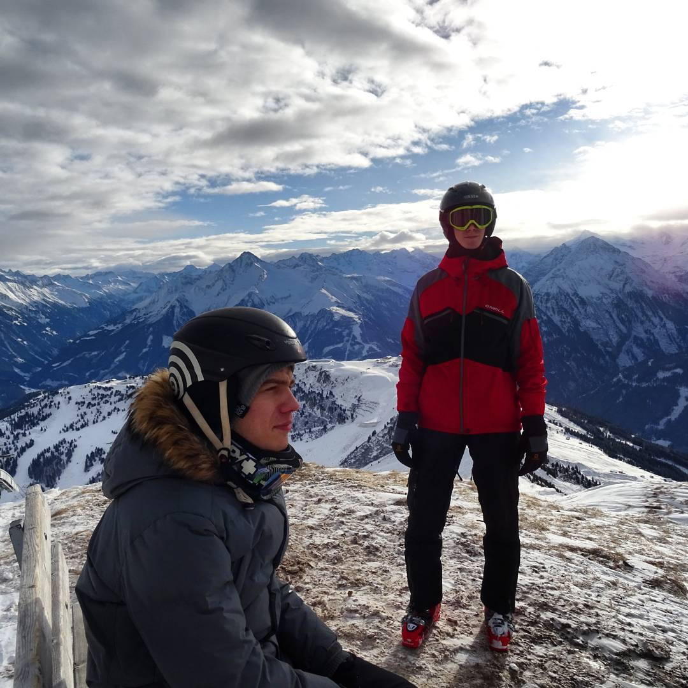

Since my schooldays I have been building remarkable, responsive websites for both desktop and mobile
Hire me for projectI have a diverse set of skills, ranging from design, to complex project development, with over 6 years experience. I am trying to keep myself up to date and staying close to new tools, trends and workflows.
Development Stack
- React JS
- React Native
- Redux & Flux
- Vue JS
- Node JS
- Webpack, Gulp & Grunt


 
